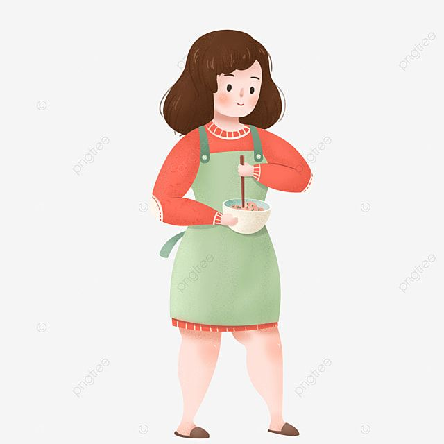

⬅ Volver al inicio
Tablas en HTML - Programación Web
| Numero | Nombre | Paterno | Materno | Edad | Rol | Descripción | Imagen |
|---|---|---|---|---|---|---|---|
| 1 | Maria Teresa | Miranda | Juarez | 45 | Madre de Familia | Mujer responsable, cariñosa y protectora, siempre pendiente del bienestar de sus hijos y del hogar |  |
| 2 | Tereso | Miranda | De La Vara | 88 | Abuelo | Hombre sabio y tranquilo, con muchas historias que contar y un gran amor por su familia | |
| 3 | Liam Alexis | Rafael | Miranda | 4 | Hermano | Es el niño más pequeño de la casa, muy alegre y juguetón |  |
| 4 | Elvira | Miranda | Juarez | 49 | Tia materna | Persona amable y comprensiva, consejera y apoyo constante para sus sobrinos y hijos | |
| 5 | Froylan | Sanchez | Miranda | 25 | Primo materno | Joven adulto trabajador, maduro y enfocado en sus metas personales y profesionales |  |
| 6 | Luis Antonio | Javier | Miranda | 19 | Primo materno | Joven dinámico, sociable y curioso, en una etapa de aprendizaje y descubrimiento | |
| 7 | Izhcel | Arzate | Miranda | 21 | Hija | Joven responsable,alegre y soñadora, con entusiasmo por su futuro y ganas de superarse |  |
| Total de integrantes | 7 | ||||||